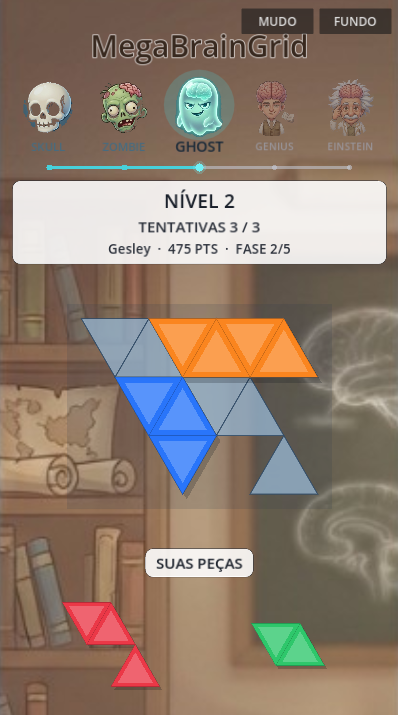

Regras
O tabuleiro é o conjunto de células-alvo, não um losango vazio qualquer. Drop inválido devolve a peça à bandeja. Derrota só quando todas as peças foram usadas e ainda há buracos.
Níveis 1–5
Lattice N=3. A silhueta cresce a cada fase: 9 células no tutorial até o losango cheio de 18 no expert. Solver confirma packing; nível inválido não inicia partida.
- Nível 1 — barra, diamante, L.
- Nível 5 — sete peças, losango completo.
Estado
Protótipo jogável com HUD, overlay de resultado e suite de testes no load debug. Próximos passos: spritesheet, rotação no gesto do jogador, SFX, scoring e export mobile.